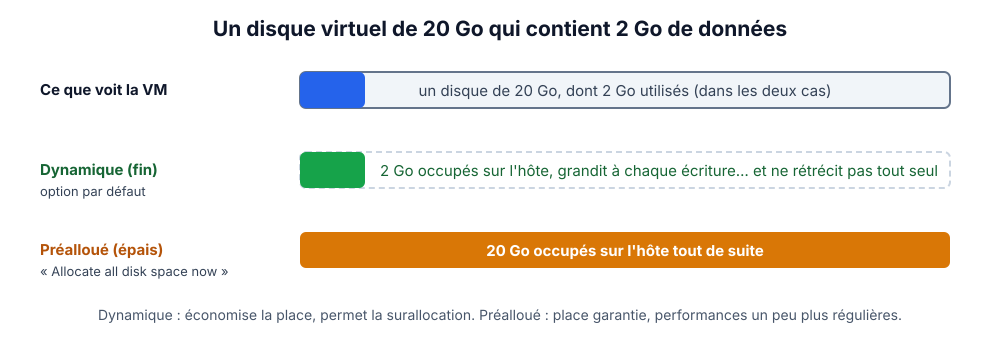
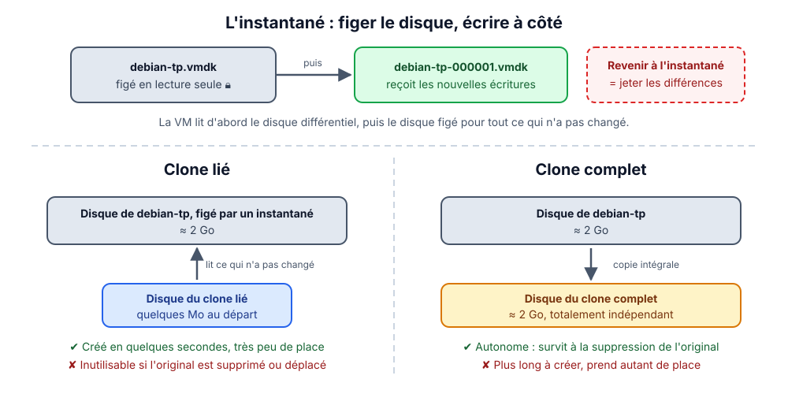
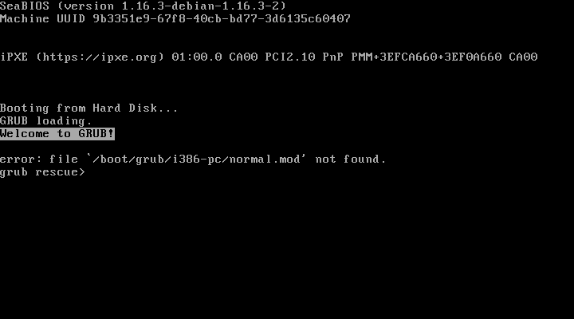

Partager les ressources : CPU, mémoire, disque, instantanés et clones¶
Résumé
Une VM n'a pas de matériel à elle : elle emprunte le processeur, la mémoire et le disque de l'hôte. Cette partie fait observer ce partage de l'intérieur et de l'extérieur de la VM debian-tp :
- le processeur : ce qu'est un vCPU, et ce que change le fait d'en donner un ou deux ;
- la mémoire : ce que la VM consomme réellement sur l'hôte, ce qu'est la surallocation et ce qui arrive quand la mémoire manque ;
- le disque : disque dynamique ou préalloué, et pourquoi un disque virtuel grandit mais ne rétrécit pas tout seul.
On manipule ensuite les deux outils les plus utiles au quotidien : les instantanés, en cassant la VM exprès pour la réparer en quelques secondes, et les clones, liés ou complets. Un défi sans pas-à-pas termine la journée.
| Propriété | Valeur |
|---|---|
| Difficulté | Débutant |
| Durée estimée | 1 h 45, défi compris |
| Version décrite | VMware Workstation Pro 26H1, Debian 13.7 |
| Place dans le parcours | Partie 4 sur 17 du parcours Virtualisation — jour 1 |
| Dernière mise à jour | 2026-11-16 |
Convention de lecture
🖥️ PC hôte (Windows et Workstation) · 🐧 VM Debian debian-tp (connecté en tssr) · ✍️ exercice · 🛟 instantané. Les comptes et mots de passe sont rappelés sur la page d'accueil du parcours.
Prérequis : la VM debian-tp de la partie 3 est installée, avec sudo et les outils open-vm-tools, et l'instantané 01-installation-terminee existe.
1. Préparer les outils de mesure¶
- 🖥️ Démarrer
debian-tpet se connecter entssr. -
🐧 Installer l'outil stress-ng, qui sait charger volontairement le processeur, la mémoire ou le disque :
-
🖥️ Ouvrir le Gestionnaire des tâches de Windows (Ctrl+Shift+Esc), onglet Performances, et le placer à côté de la fenêtre de Workstation : on va observer l'hôte pendant qu'on charge la VM.
Libérer la souris et le clavier
Quand on clique dans la console de la VM, Workstation « capture » la souris et le clavier. Pour revenir à Windows, appuyer sur Ctrl+Alt.
2. Le processeur¶
2.1 Ce qu'est un vCPU¶
Un vCPU (processeur virtuel) est, pour l'hôte, une simple tâche à exécuter, comme un programme. L'hyperviseur fait passer ces tâches à tour de rôle sur les processeurs logiques du PC (un cœur avec l'hyperthreading compte pour deux processeurs logiques). Une VM à 2 vCPU peut donc utiliser au maximum l'équivalent de 2 processeurs logiques de l'hôte, jamais plus.
Dans les paramètres d'une VM (VM > Settings > Processors), Workstation demande :
- Number of processors (nombre de processeurs) : le nombre de sockets (de « puces ») virtuels ;
- Number of cores per processor (nombre de cœurs par processeur) : le nombre de cœurs de chacun.
Le nombre total de vCPU est le produit des deux. Pour Linux, 1 × 2 ou 2 × 1 revient au même. Certains logiciels sont vendus par socket : on préfère alors 1 processeur et plusieurs cœurs.
Plus de vCPU ne veut pas dire plus rapide
- Ne jamais donner à une VM plus de vCPU que l'hôte n'a de processeurs logiques.
- Chaque vCPU est un fil d'exécution qui attend son tour sur un processeur logique de l'hôte. Plus une VM a de vCPU, plus elle entre en concurrence avec les autres VM et avec l'hôte lui-même, et plus ses vCPU doivent se coordonner entre eux. Sur un hôte chargé, une VM surdimensionnée peut donc être plus lente qu'une VM à 2 vCPU.
- Règle pratique : commencer petit (1 ou 2 vCPU), mesurer, puis augmenter si la VM est réellement limitée par le processeur.
2.2 TP : mesurer la puissance d'un ou de deux vCPU¶
-
🐧 Afficher le nombre de vCPU vus par Debian :
-
🐧 Lancer un test de calcul de 20 secondes sur tous les vCPU (
--cpu 0= autant de calculs que de vCPU) : -
🖥️ Pendant le test, regarder le graphique Processeur du Gestionnaire des tâches : l'utilisation du PC monte de l'équivalent de 2 processeurs logiques (sur un PC à 8 processeurs logiques, environ 25 %).
- 🐧 À la fin, noter la valeur de la colonne bogo ops/s (real time) de la ligne
cpu: c'est le nombre d'opérations de calcul faites par seconde. - 🐧 Éteindre la VM :
sudo poweroff. - 🖥️ Ouvrir VM > Settings > Processors, mettre Number of processors à
1et Number of cores per processor à1, puis OK. - 🖥️ Démarrer la VM, se connecter en
tssret refaire les étapes 1 à 4. - 🐧 Éteindre la VM :
sudo poweroff. - 🖥️ Remettre la VM à 2 vCPU (Number of processors
1, Number of cores per processor2), puis la démarrer et se connecter entssr. Les réglages du matériel ne se modifient que VM éteinte : allumée, ils sont grisés.
Vérifier son lab
Avec 2 vCPU, nproc affiche 2 ; avec 1 vCPU, il affiche 1. Le nombre d'opérations par seconde est à peu près divisé par deux avec un seul vCPU. Exemple de mesure sur un hôte équipé d'un Intel Core i7-6700K :
# 2 vCPU
stress-ng: metrc: [719] stressor bogo ops real time usr time sys time bogo ops/s bogo ops/s
stress-ng: metrc: [719] cpu 85581 20.00 39.42 0.00 4279.04 2171.17
# 1 vCPU
stress-ng: metrc: [700] cpu 44349 20.49 19.98 0.01 2164.13 2218.69
La dernière colonne (opérations par seconde par vCPU) reste la même : chaque vCPU a la puissance d'un processeur logique de l'hôte. La valeur exacte dépend du processeur de chaque PC : seul le rapport entre les deux mesures compte.
Vu de l'hôte : un vCPU est un fil d'exécution
Sur un hôte Linux avec l'hyperviseur KVM, le processus d'une VM à 2 vCPU contient deux fils d'exécution nommés CPU 0/KVM et CPU 1/KVM, et la commande top de l'hôte affiche ce processus à 200 % de processeur (deux processeurs logiques pleins) pendant le test. Sous Windows, Workstation fonctionne de la même manière : chaque vCPU est un fil d'exécution du processus vmware-vmx.exe.
3. La mémoire¶
3.1 Mémoire attribuée et mémoire réellement utilisée¶
Quand on attribue 2 Go à une VM, l'hyperviseur ne prend généralement pas 2 Go à l'hôte d'un coup : il fournit la mémoire au fur et à mesure que le système invité l'utilise. En revanche, une mémoire que l'invité a utilisée puis libérée n'est pas forcément rendue à l'hôte.
Une mesure sur un hôte KVM
Une VM Debian 13 à qui l'on attribue 1 Gio de mémoire :
| Moment | Mémoire utilisée dans la VM (free -m) |
Mémoire occupée sur l'hôte par la VM |
|---|---|---|
| Juste après le démarrage | 221 Mo | ≈ 400 Mo |
Pendant un stress-ng qui occupe 600 Mo |
830 Mo | ≈ 990 Mo |
Après le stress-ng |
230 Mo | ≈ 990 Mo : la mémoire n'a pas été rendue à l'hôte |
C'est pour récupérer cette mémoire que les hyperviseurs utilisent un ballon (voir plus bas).
3.2 La surallocation de la mémoire¶
La surallocation (overcommitment) consiste à attribuer aux VM, au total, plus de mémoire que l'hôte n'en possède. Par exemple, cinq VM de 4 Go sur un hôte de 16 Go. Cela fonctionne tant que les VM n'utilisent pas toutes leur mémoire en même temps, comme une compagnie aérienne qui vend plus de billets que de sièges en comptant sur les absents.
Quand la mémoire réelle vient à manquer, l'hyperviseur dispose de plusieurs techniques, de la plus douce à la plus pénalisante :
| Technique | Principe |
|---|---|
| Ballon (ballooning) | Un pilote installé dans l'invité (dans le noyau Linux, ou fourni par les VMware Tools sous Windows) « gonfle » : il réclame de la mémoire à l'intérieur de la VM, que l'hyperviseur peut alors rendre à l'hôte ou donner à une autre VM. L'invité choisit lui-même quoi libérer : c'est la méthode la plus intelligente |
| Partage de pages | Des pages de mémoire identiques (même système dans plusieurs VM) ne sont stockées qu'une fois. Pour des raisons de sécurité, VMware ne le fait plus par défaut entre VM différentes sur ESXi |
| Compression | Les pages peu utilisées sont compressées en mémoire |
| Échange sur disque (swap) | L'hyperviseur place une partie de la mémoire des VM dans un fichier sur le disque. C'est très lent : les VM deviennent très lentes |
Dans Workstation, le plafond de mémoire de toutes les VM se règle dans Edit > Preferences > Memory :
- Reserved memory : la mémoire de l'hôte que les VM peuvent utiliser au total (un plafond, pas une réservation à l'avance) ;
- Fit all virtual machine memory into reserved host RAM : refuse de démarrer une VM si la mémoire de toutes les VM allumées ne tient pas dans ce plafond (pas de surallocation) ;
- Allow some virtual machine memory to be swapped ou Allow most virtual machine memory to be swapped : autorise la surallocation, une partie de la mémoire des VM pouvant alors partir sur le disque.
3.3 TP : observer la mémoire de la VM¶
-
🐧 Dans la VM, afficher la mémoire :
La ligne
Mem:affiche un total un peu inférieur aux 2 Go attribués : le noyau Linux en réserve une petite partie pour lui-même. La ligneÉchange:(swap) montre l'espace d'échange que l'installateur de Debian a créé sur le disque. -
🖥️ Dans le Gestionnaire des tâches, onglet Performances > Mémoire, noter la mémoire En cours d'utilisation du PC.
-
🐧 Occuper 1,5 Go de mémoire pendant 60 secondes :
Le
&lance la commande en arrière-plan, ce qui permet de taperfree -hpendant le test. -
🖥️ Pendant le test, regarder de nouveau la mémoire En cours d'utilisation de Windows, puis encore une fois après la fin du test.
3.4 ✍️ Exercice : que se passe-t-il quand la mémoire manque ?¶
- 🐧 Éteindre la VM (
sudo poweroff). 🖥️ Dans VM > Settings > Memory, attribuer 512 Mo, puis démarrer la VM. -
🐧 Demander 700 Mo de mémoire, plus que la VM n'en a, tout en observant la mémoire chaque seconde :
-
Observer les colonnes
swpd(mémoire placée sur le disque),sietso(données qui entrent et sortent de l'espace d'échange chaque seconde), puis lire les messages du noyau : -
🐧 Éteindre la VM :
sudo poweroff. - 🖥️ Remettre la VM à 2 Go de mémoire dans VM > Settings > Memory.
Que s'est-il passé ? Pourquoi la VM est-elle devenue lente ? Qu'aurait-il pu se passer sans espace d'échange ?
Corrigé
- Avec 512 Mo, le système invité manque de mémoire : il déplace une partie de son contenu dans son espace d'échange (les colonnes
swpd,sietsoaugmentent). Le disque étant des milliers de fois plus lent que la mémoire, toute la VM ralentit. -
Si la mémoire et l'espace d'échange ne suffisent plus, le noyau Linux déclenche le tueur de processus (OOM killer, pour Out Of Memory) : il arrête de force le programme qui consomme le plus. Sur une VM sans espace d'échange,
dmesgaffiche alors un message comme : -
Leçon pour la production : une VM sous-dimensionnée en mémoire devient lente ou perd des processus. Une surallocation trop forte sur l'hôte provoque le même effet, mais pour toutes les VM à la fois. On surveille donc la mémoire de l'hôte et des VM, et on garde une marge.
4. Le disque¶
4.1 Disque dynamique ou préalloué¶

La VM voit la même chose dans les deux cas ; seule la place occupée sur l'hôte change.
| Disque dynamique (thin, fin) | Disque préalloué (thick, épais) | |
|---|---|---|
| Dans Workstation | Par défaut | Case Allocate all disk space now (allouer tout l'espace disque maintenant), en configuration Custom |
| Place sur l'hôte | Ce qui a été réellement écrit | La taille totale, tout de suite |
| Création | Instantanée | Longue (il faut écrire toute la taille) |
| Surallocation | Possible : la somme des tailles peut dépasser le disque de l'hôte | Impossible |
| Risque | Si le disque de l'hôte se remplit, toutes les VM qui veulent écrire sont mises en pause | Aucun pour l'espace, mais gaspillage de place |
Workstation propose aussi de découper le disque en plusieurs fichiers d'au plus 2 Go (Split virtual disk into multiple files, choix par défaut) ou de le garder en un seul fichier. Le découpage facilite la copie sur une clé USB formatée en FAT32 ; le fichier unique est un peu plus simple à manipuler.
4.2 TP : regarder le disque grandir¶
- 🖥️ Démarrer
debian-tpet se connecter entssr. - 🖥️ Dans l'Explorateur de fichiers, ouvrir le dossier de la VM (
C:\VM\debian-tp) et noter la taille des fichiers.vmdk(sélectionner tous les.vmdk, puis clic droit > Propriétés). -
🐧 Afficher la place occupée dans la VM :
-
🐧 Écrire un fichier de 2 Go rempli de données aléatoires :
-
🖥️ Regarder de nouveau la taille des
.vmdk: elle a augmenté d'environ 2 Go. -
🐧 Supprimer le fichier, puis vérifier dans la VM que la place est libérée :
-
🖥️ Regarder la taille des
.vmdk: elle n'a pas diminué.
Pourquoi le disque ne rétrécit-il pas ?
Quand on supprime un fichier, le système invité note simplement que ses blocs sont libres ; il ne prévient pas l'hyperviseur. Pour l'hyperviseur, ces blocs ont été écrits un jour, il les garde. Mesure faite sur un hôte KVM avec un disque dynamique de 20 Go : 2,7 Go occupés sur l'hôte → 4,6 Go après l'écriture de 2 Gio → toujours 4,6 Go après la suppression du fichier.
Pour récupérer la place, on réduit (shrink) le disque. Dans une VM Linux, les outils open-vm-tools le font en une commande, à lancer avant de prendre des instantanés :
La commande remplit d'abord l'espace libre de zéros, puis Workstation compacte le fichier. D'après Broadcom, la réduction est impossible sur un disque préalloué et sur un disque qui a des instantanés (il faut d'abord les supprimer). Dans ce TP, debian-tp a déjà l'instantané 01-installation-terminee : on ne réduit donc pas son disque maintenant, il suffit de retenir la méthode.
5. Les instantanés¶
5.1 Comment ça marche¶
Un instantané (snapshot) enregistre l'état d'une VM à un instant donné : le contenu de ses disques, ses paramètres et, si elle est allumée, le contenu de sa mémoire. On peut ensuite revenir à cet état en quelques secondes.

Un instantané ne copie rien : il fige le disque et écrit les changements à côté. Le clone lié repose sur le même principe.
Au moment de l'instantané, Workstation fige le disque de la VM, qui passe en lecture seule, et crée un disque différentiel (un fichier comme debian-tp-000001.vmdk) qui reçoit toutes les écritures suivantes. Revenir à l'instantané revient à jeter ce disque différentiel. Si la VM était allumée, l'état de sa mémoire est enregistré dans un fichier .vmem et l'état de la VM dans un fichier .vmsn ; le fichier .vmsd tient la liste des instantanés.
Un instantané n'est PAS une sauvegarde
- Il est stocké dans le dossier de la VM, sur le même disque : une panne de disque, un vol du PC ou un rançongiciel l'emportent avec la VM.
- Il dépend du disque d'origine : sans le disque figé, le disque différentiel est inutilisable.
- Plus il vit longtemps, plus le disque différentiel grossit, et plus la VM ralentit (elle doit lire dans plusieurs fichiers).
Bonnes pratiques : prendre un instantané avant une opération risquée (mise à jour, changement de configuration), vérifier que tout fonctionne, puis le supprimer dans les jours qui suivent. Ne jamais toucher aux fichiers .vmdk à la main.
5.2 TP : casser sa VM exprès… et la réparer¶
On va faire ce qu'il ne faut jamais faire sur un vrai serveur : effacer tout le système. Grâce à un instantané, la réparation prend quelques secondes.
- 🐧 Éteindre la VM :
sudo poweroff. - 🖥️ Vérifier que les dossiers partagés sont désactivés : VM > Settings > Options > Shared Folders doit être sur Disabled, le réglage par défaut. Sinon, la commande destructrice pourrait aussi effacer des fichiers du PC.
- 🛟 🖥️ VM éteinte, prendre un instantané : VM > Snapshot > Take Snapshot, nom
02-outils-installes, description « avant l'erreur volontaire ». Il servira aussi de base aux clones de la section 6 : Workstation ne clone qu'à partir d'un instantané pris VM éteinte. - 🖥️ Regarder le dossier de la VM : un nouveau disque différentiel
debian-tp-000002.vmdk(ou plusieurs fichiers-000002-s001.vmdk…) et un fichier.vmsnsont apparus. - 🖥️ Ouvrir VM > Snapshot > Snapshot Manager et vérifier que
02-outils-installesapparaît bien. Ne pas continuer sans cet instantané. - 🖥️ Démarrer la VM et se connecter en
tssrdans la console de Workstation. -
🐧 Créer un fichier témoin :
-
🐧 Effacer tout le système. La première partie de la commande vérifie le nom de la machine : si l'on n'est pas dans
debian-tp, rien n'est effacé.Les messages d'erreur défilent. Taper ensuite
lsouwhoami: la réponse estcommande introuvable(oucommand not found), les commandes elles-mêmes ont été effacées.Uniquement dans la console de
debian-tpCette commande se tape dans la console Workstation de la VM
debian-tp, jamais dans un terminal SSH, dans WSL, ni sur une autre machine Linux. Sur un vrai serveur, elle détruirait tout, sans retour possible. -
🖥️ Redémarrer la VM de force : VM > Power > Reset. La VM ne démarre plus. Avec un micrologiciel BIOS (réglé en partie 3), elle s'arrête sur l'invite de secours de GRUB, le programme de démarrage :

Le système a été effacé : le chargeur de démarrage ne trouve plus ses fichiers
-
🖥️ Revenir à l'instantané : VM > Snapshot > Revert to Snapshot: 02-outils-installes, puis confirmer. La VM revient exactement à l'état de l'instantané : éteinte, avec tout son système.
- 🖥️ Démarrer la VM et se connecter en
tssr. -
🐧 Vérifier :
Vérifier son lab
cat ~/important.txtrépondAucun fichier ou dossier de ce nom: c'est normal, le fichier a été créé après l'instantané. Tout ce qui a été fait après l'instantané est perdu, le bon comme le mauvais.ls /usr/share/doc | wc -laffiche plusieurs centaines de dossiers : le système est revenu en entier.- Le retour à un instantané ne prend que quelques secondes : rien n'est recopié, l'hyperviseur jette simplement le disque différentiel.
Et si l'on avait créé important.txt avant l'instantané ?
Il serait revenu avec le reste. C'est tout l'enjeu du moment où l'on prend l'instantané : juste avant l'opération risquée, et pas une heure avant, sinon on perd tout le travail de l'heure.
5.3 Le gestionnaire d'instantanés¶
🖥️ Ouvrir VM > Snapshot > Snapshot Manager (Gestionnaire d'instantanés). Il affiche l'arbre des instantanés de la VM : 01-installation-terminee, puis 02-outils-installes, puis l'état actuel (You Are Here, vous êtes ici). On peut y prendre, supprimer, cloner un instantané ou y revenir (Go To).
Supprimer un instantané ne supprime pas les données de la VM
Supprimer un instantané (Delete) ne fait pas revenir la VM en arrière : Workstation fusionne le disque différentiel avec le disque figé, et la VM garde son état actuel. On perd seulement la possibilité de revenir à ce point.
6. Les clones¶
6.1 Clone lié ou clone complet¶
Cloner une VM, c'est en créer une copie qui démarre comme une nouvelle machine. Workstation propose deux sortes de clones (voir le schéma de la section 5.1) :
| Clone lié (linked clone) | Clone complet (full clone) | |
|---|---|---|
| Principe | Partage le disque figé de la VM d'origine, n'enregistre que ses différences | Copie intégrale et indépendante |
| Création | Quelques secondes | Le temps de copier tout le disque |
| Place | Quelques Mo au départ | Autant que l'original |
| Dépendance | Ne fonctionne plus si l'original (ou son instantané) est supprimé ou déplacé | Aucune |
| Usage | Labs, formations, tests jetables | Machine durable, à déplacer ou à donner |
Mesure sur un hôte KVM, à partir d'un disque Debian 13 de 327 Mo (compressé) : le clone lié est créé en 0,05 s et occupe 196 Ko ; le clone complet prend 3,3 s et occupe 961 Mo.
6.2 TP : créer un clone lié et un clone complet¶
- 🐧 Éteindre
debian-tp(sudo poweroff). Un clone se crée VM éteinte. - 🖥️ Ouvrir VM > Manage > Clone (VM > Gérer > Cloner). L'assistant Clone Virtual Machine Wizard s'ouvre ; cliquer sur Next.
- Clone Source (source du clone) : choisir An existing snapshot (un instantané existant) et sélectionner
02-outils-installes, puis Next. - Clone Type (type de clone) : choisir Create a linked clone (créer un clone lié), puis Next.
- Name of the New Virtual Machine : nom
debian-clone-lie, emplacementC:\VM\debian-clone-lie, puis Finish. La création est quasi instantanée ; cliquer sur Close. - 🖥️ Recommencer depuis
debian-tpavec Create a full clone (créer un clone complet), nomdebian-clone-complet, emplacementC:\VM\debian-clone-complet. Cette fois, une barre de progression s'affiche pendant la copie. - 🖥️ Les clones héritent des réglages de
debian-tp. Pour économiser la mémoire du PC, ouvrir VM > Settings de chaque clone et régler Processors sur 1 × 1 et Memory sur 1 Go. - 🖥️ Dans l'Explorateur, comparer la taille des trois dossiers
debian-tp,debian-clone-lieetdebian-clone-complet.
6.3 Donner une identité propre au clone¶
Un clone est une copie parfaite : même nom de machine, même identifiant de machine, mêmes clés SSH, même identifiant auprès du serveur DHCP. Workstation génère une nouvelle adresse MAC pour la carte réseau du clone, mais le reste doit être changé à la main, sinon deux machines se présentent sous la même identité sur le réseau.
- 🖥️ Démarrer
debian-clone-lieet se connecter entssr. 🐧 Le nom affiché est toujoursdebian-tp. -
🐧 Changer le nom de la machine :
-
🐧 Générer un nouvel identifiant de machine (utilisé par systemd, les journaux et certains logiciels pour reconnaître la machine). Debian en garde une copie dans
/var/lib/dbus/machine-id: il faut l'effacer aussi, sinon l'ancien identifiant est simplement recopié : -
🐧 Générer de nouvelles clés SSH d'hôte (sinon les deux machines ont la même « empreinte » pour les clients SSH) :
-
🐧 Effacer l'identifiant DHCP du client
dhcpcd, utilisé par Debian 13 pour demander son adresse IP. Il est recréé automatiquement au prochain démarrage, propre au clone : -
🐧 Redémarrer (
sudo reboot), se reconnecter, puis vérifier :
Connexion SSH : « REMOTE HOST IDENTIFICATION HAS CHANGED »
Si l'on s'était déjà connecté en SSH à la même adresse IP avant de changer les clés, le client SSH refuse la connexion avec ce message d'alerte : l'empreinte de la machine a changé, ce qui pourrait signaler une usurpation. Ici, c'est normal : on vient de régénérer les clés. Effacer l'ancienne empreinte sur le PC (PowerShell), puis se reconnecter :
Sous Windows : Sysprep
Sous Windows, le même problème se règle avec l'outil Sysprep (C:\Windows\System32\Sysprep\sysprep.exe, option Généraliser), qui efface l'identité de la machine avant de la cloner. C'est indispensable avant de joindre des clones à un domaine Active Directory.
Vérifier son lab
- Le dossier
debian-clone-liene pèse que quelques dizaines de Mo ; le dossierdebian-clone-completpèse quelques Go (une copie du disque à l'état de l'instantané) ;debian-tppèse davantage, car il garde aussi ses disques différentiels d'instantanés. - Dans le clone,
hostnamectlafficheStatic hostname: debian-clone-lie, et l'identifiant decat /etc/machine-idest différent de celui dedebian-tp. ip -4 aaffiche une adresse en192.168.x.128ou au-dessus, différente de celle dedebian-tp.
Ne pas supprimer debian-tp
Le clone lié dépend de debian-tp et de son instantané 02-outils-installes. Supprimer debian-tp, le déplacer ou supprimer cet instantané rendrait debian-clone-lie inutilisable.
7. Défi du jour 1¶
Mise en situation
Le responsable informatique de Bureautix doit tester une mise à jour risquée sur deux serveurs Linux avant de la faire en production. Il demande un environnement de test jetable, construit à partir de debian-tp, et une fiche de documentation.
Sans pas-à-pas, réaliser :
- deux clones liés de
debian-tpnomméstest-webettest-bdd, chacun avec 1 vCPU et 768 Mo de mémoire, et une identité propre (nom, identifiant de machine, clés SSH et identifiant DHCP) ; - la preuve que les deux machines se voient sur le réseau (avec
ping, en utilisant leurs adresses IP) ; - sur
test-web, un instantanéavant-maj, puis la mise à jour complète du système (sudo apt update && sudo apt full-upgrade -y), puis le retour à l'instantané, comme si la mise à jour avait échoué ; - le calcul de la place totale occupée sur le PC par
debian-tp,test-webettest-bdd, avec une explication en deux phrases ; - une fiche de documentation des deux machines de test : nom, rôle, vCPU, mémoire, taille du disque, réseau, adresse IP, instantanés, VM dont elles dépendent.
Temps conseillé : 45 minutes.
Corrigé
- Pour chaque clone :
debian-tpéteinte, VM > Manage > Clone, source An existing snapshot (02-outils-installes), Create a linked clone, nomtest-web(puistest-bdd). Dans VM > Settings du clone : Processors à 1 × 1, Memory à 768 Mo. Démarrer le clone, puis appliquer les commandes de la section 6.3 avec le bon nom (sudo hostnamectl set-hostname test-web,/etc/hosts,machine-id, clés SSH, identifiant DHCP) et redémarrer. - Sur chaque clone,
ip -4 adonne l'adresse (deux adresses différentes en192.168.x.128ou au-dessus). Depuistest-web:ping -c 4 <adresse de test-bdd>répond, car les deux VM sont branchées sur le même commutateur virtuel VMnet8. - Sur
test-web: VM > Snapshot > Take Snapshot (avant-maj), puissudo apt update && sudo apt full-upgrade -y, puis VM > Snapshot > Revert to Snapshot: avant-maj. Les paquets mis à jour sont revenus à leur version d'avant ;apt list --upgradablepeut de nouveau les afficher « en attente », ou n'afficher rien si la liste des paquets de l'instantané n'était pas encore à jour. debian-tppèse quelques gigaoctets (le système installé, plus le fichier de 2 Go écrit puis effacé en section 4.2, que le disque dynamique n'a pas rendu) ; chaque clone lié ne pèse que quelques dizaines à quelques centaines de Mo (ses fichiers de configuration, ses journaux et les blocs modifiés depuis le clonage, dont les fichiers de la mise à jour si on ne l'a pas annulée). Explication : les clones liés partagent le disque figé dedebian-tpet n'enregistrent que leurs différences ; c'est ce qui permet de monter vite un lab de plusieurs machines sans remplir le disque du PC.-
Exemple de fiche :
Nom Rôle vCPU Mémoire Disque Réseau IP Instantanés Dépend de test-webTest de mise à jour, serveur web 1 768 Mo 20 Go dynamique, clone lié VMnet8 (NAT) 192.168.x.1xx(DHCP)avant-majdebian-tp, instantané02-outils-installestest-bddTest de mise à jour, base de données 1 768 Mo 20 Go dynamique, clone lié VMnet8 (NAT) 192.168.x.1xx(DHCP)aucun debian-tp, instantané02-outils-installesLa colonne Dépend de est la plus importante : elle évite qu'un collègue supprime
debian-tpen pensant faire du ménage.
8. Questions de révision¶
- Une VM a 4 vCPU sur un hôte de 4 processeurs logiques déjà chargé par d'autres VM. Pourquoi peut-elle être plus lente qu'avec 2 vCPU ?
- Qu'est-ce que la surallocation de la mémoire ? Citer deux techniques qu'utilise l'hyperviseur quand la mémoire vient à manquer.
- Un disque dynamique de 40 Go contient 10 Go de données ; on efface 5 Go de fichiers dans la VM. Quelle place occupe-t-il sur l'hôte ? Comment récupérer de la place ?
- Pourquoi un instantané n'est-il pas une sauvegarde ? Donner deux raisons.
- Quelle est la différence entre un clone lié et un clone complet ? Dans quel cas choisir l'un ou l'autre ?
- Après avoir cloné une VM Linux, quels éléments faut-il changer pour lui donner une identité propre ? Et sous Windows ?
Corrigé
- Chacun de ses 4 vCPU est un fil d'exécution qui attend son tour sur les processeurs logiques de l'hôte, en concurrence avec les vCPU des autres VM et avec l'hôte lui-même ; ses vCPU doivent aussi se coordonner entre eux. Sur un hôte déjà chargé, elle passe plus de temps à attendre qu'une VM à 2 vCPU. On dimensionne au plus juste et on augmente après mesure.
- Attribuer aux VM, au total, plus de mémoire que l'hôte n'en possède, en pariant qu'elles ne l'utiliseront pas toutes en même temps. Techniques : le ballon (un pilote dans l'invité libère de la mémoire que l'hyperviseur récupère), le partage de pages identiques, la compression, l'échange sur disque (swap, le plus lent).
- Il occupe toujours environ 10 Go (voire un peu plus) : les blocs libérés dans la VM ne sont pas rendus à l'hôte. Pour récupérer la place, on réduit le disque (
sudo vmware-toolbox-cmd disk shrink /dans une VM Linux), à condition que le disque soit dynamique et n'ait pas d'instantané. - Il est stocké au même endroit que la VM (une panne du disque, un vol ou un rançongiciel l'emporte aussi) et il dépend du disque d'origine. Il ralentit aussi la VM et grossit avec le temps : il est fait pour durer quelques heures ou quelques jours, pas pour protéger des données.
- Le clone lié partage le disque figé de l'original et ne stocke que ses différences : création instantanée, très peu de place, mais dépendance à l'original. Le clone complet est une copie indépendante : plus long et plus volumineux, mais autonome. Lié pour un lab ou un test jetable ; complet pour une machine durable, à déplacer ou à livrer.
- Sous Linux : le nom de la machine (
hostnamectl,/etc/hosts), l'identifiant de machine (/etc/machine-id), les clés SSH d'hôte et l'identifiant DHCP (/var/lib/dhcpcd/duid) ; Workstation change déjà l'adresse MAC. Sous Windows : passer Sysprep en mode Généraliser, qui réinitialise l'identité de la machine (dont son identifiant de sécurité, le SID) avant le clonage.
Ressources¶
- Broadcom — Fichiers d'une machine virtuelle (Workstation 26H1) — rôle des fichiers
.vmx,.vmdk,.vmsd,.vmsn,.vmem(en anglais). - Broadcom — Réduire un disque virtuel de Workstation — conditions et procédure de réduction d'un disque (en anglais).
- Page de manuel de stress-ng — toutes les options de l'outil de charge (en anglais).
- Partie précédente : Créer sa première VM Debian 13 · Partie suivante : Virtualiser des serveurs.